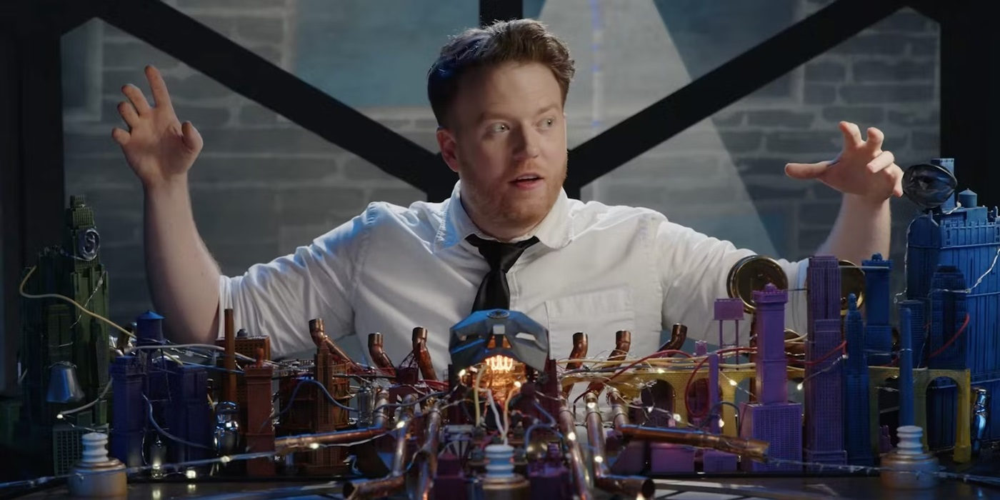

<!DOCTYPE html>
<html>
<head>
    <link rel="preconnect" href="https://fonts.googleapis.com">
    <link rel="preconnect" href="https://fonts.gstatic.com" crossorigin>
    <link href="https://fonts.googleapis.com/css2?family=Monoton&display=swap" rel="stylesheet">
    <link href="https://fonts.googleapis.com/css2?family=Monoton&family=Teko:wght@300..700&display=swap" rel="stylesheet">
    <link href="https://fonts.googleapis.com/css2?family=Ubuntu:ital,wght@0,300;0,400;0,500;0,700;1,300;1,400;1,500;1,700&display=swap" rel="stylesheet">

    <meta charset="utf-8">
    <meta name="viewport" content="width=device-width, initial-scale=1">
    <link rel="stylesheet" type="text/css" href="brennan.css">
    <title>Brennan Lee Mulligan</title>
</head>
</html>

<body>
    <div class="heading">
        
    <h1> Brennan Lee Mulligan </h1>
        
    

    <p id="box">Brennan Lee Mulligan is the dungeonmaster for all Intrepid Heroes seasons of Dimension 20 (on Dropout.tv). In the offseasons, he switches between being a gamemaster and playing loveable characters on the show. Brennan has been a Dungeon Master since he was 10 years old, and shows no signs of stopping.</p>

    <div class="clps">
    <details>
        <summary>Where to find Brennan</summary>
        <ol>
            <li> <a href="https://www.dropout.tv"> Dropout.tv </a></li>
            <li> <a href="https://www.instagram.com/brennanleemulligan">Brennan's Instagram</a></li>
            <li> <a href="https://brennanleemulligan.com/">Brennan's Site</a></li>
        </ol>
    </details>
    </div>

    <table class="seasonstable">
        <thead>
            <tr>
                <th>Season Number</th>
                <th>Season Title</th>
                <th>Season Type</th>
                <th>Character Played</th>
            </tr>
        </thead>
        <tbody>
        <tr>
            <td>1</td>
            <td>Fantasy High</td>
            <td>Intrepid Heroes</td>
            <td>Dungeon Master</td>
        </tr>
        <tr>
            <td>2</td>
            <td>Escape the Bloodkeep</td>
            <td>Side Quest</td>
            <td>Dungeon Master</td>
        </tr>
        <tr>
            <td>3</td>
            <td>The Unsleeping City</td>
            <td>Intrepid Heroes</td>
            <td>Dungeon Master</td>
        </tr>
        <tr>
            <td>4</td>
            <td>Fantasy High: Sophmore Year</td>
            <td>Intrepid Heroes</td>
            <td>Dungeon Master</td>
        </tr>
        <tr>
            <td>5</td>
            <td>Tiny Heist</td>
            <td>Side Quest</td>
            <td>Dungeon Master</td>
        </tr>
        <tr>
            <td>6</td>
            <td>A Crown of Candy</td>
            <td>Intrepid Heroes</td>
            <td>Dungeon Master</td>
        </tr>
        <tr>
            <td>7</td>
            <td>Pirates of Leviathan</td>
            <td>Side Quest</td>
            <td>Dungeon Master</td>
        </tr>
        <tr>
            <td>8</td>
            <td>The Unsleeping City: Chapter II</td>
            <td>Intrepid Heroes</td>
            <td>Dungeon Master</td>
        </tr>
        <tr>
            <td>9</td>
            <td>Mice & Murder</td>
            <td>Side Quest</td>
            <td>Dungeon Master</td>
        </tr>
        <tr>
            <td>10*</td>
            <td>Misfits and Magic</td>
            <td>Side Quest</td>
            <td>Evan Kelmp</td>
        </tr>
        <tr>
            <td>11</td>
            <td>The Seven</td>
            <td>Side Quest</td>
            <td>Dungeon Master</td>
        </tr>
        <tr>
            <td>13</td>
            <td>A Starstruck Odyssey</td>
            <td>Intrepid Heroes</td>
            <td>Dungeon Master</td>
        </tr>
        <tr>
            <td>15*</td>
            <td>A Court of Fey and Flowers</td>
            <td>Side Quest</td>
            <td>Captain K.P. Hob</td>
        </tr>
        <tr>
            <td>16</td>
            <td>Neverafter</td>
            <td>Intrepid Heroes</td>
            <td>Dungeon Master</td>
        </tr>
        <tr>
            <td>17</td>
            <td>The Ravening War</td>
            <td>Side Quest</td>
            <td>Bishop Raphaniel Charlock</td>
        </tr>
        <tr>
            <td>18</td>
            <td>Dungeons and Drag Queens</td>
            <td>Side Quest</td>
            <td>Dungeon Master</td>
        </tr>
        <tr>
            <td>19*</td>
            <td>Mentopolis</td>
            <td>Side Quest</td>
            <td>Dungeon Master</td>
        </tr>
        <tr>
            <td>20</td>
            <td>Burrows End</td>
            <td>Side Quest</td>
            <td>Tula</td>
        </tr>
        <tr>
            <td>21</td>
            <td>Fantasy High: Junior Year</td>
            <td>Intrepid Heroes</td>
            <td>Dungeon Master</td>
        </tr>
        <tr>
            <td>22*</td>
            <td>Never Stop Blowing Up</td>
            <td>Side Quest</td>
            <td>Dungeon Master</td>
        </tr>
        </tbody>
    </table>

    <b id="bold">*entries marked with an asterisk are run on systems other than traditional dungeons and dragons, as listed below</b>

    <div class="list">
    <ul>
        <li>10 - Misfits and Magic - run on Kids on Brooms</li>
        <li>15 - A Court of Fey & Flowers - run on Good Society</li>
        <li>19 - Mentopolis - run on Kids on Bikes</li>
        <li>22 - Never Stop Blowing Up - run on Never Stop Blowing Up</li>
    </ul>
    </div>
</body>